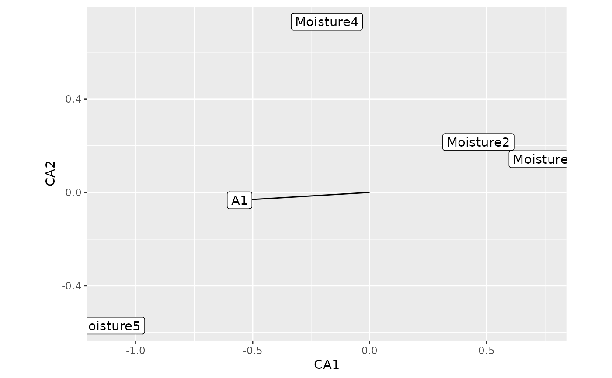

ggplot-based plot for envfit objects
autoplot.envfit.RdProduces a multi-layer ggplot object representing the output of objects
produced by vegan::envfit().
Arguments
- object
an object of class
"envfit", the result of a call tovegan::envfit().- geom
character; which geom to use to label vectors and factor centroids.
- line.col
colour with which to draw vectors.
- xlab
character; label for the x-axis.
- ylab
character; label for the y-axis.
- title
character; subtitle for the plot.
- subtitle
character; subtitle for the plot.
- caption
character; caption for the plot.
- ...
additional arguments passed to
ggplot2::fortify().
Examples
library("vegan")
data(varespec, varechem)
ord1 <- metaMDS(varespec)
#> Square root transformation
#> Wisconsin double standardization
#> Run 0 stress 0.1843196
#> Run 1 stress 0.2633021
#> Run 2 stress 0.2085514
#> Run 3 stress 0.1825658
#> ... New best solution
#> ... Procrustes: rmse 0.04163008 max resid 0.151824
#> Run 4 stress 0.1825658
#> ... Procrustes: rmse 2.44659e-05 max resid 8.075038e-05
#> ... Similar to previous best
#> Run 5 stress 0.1969805
#> Run 6 stress 0.196245
#> Run 7 stress 0.224895
#> Run 8 stress 0.1967393
#> Run 9 stress 0.2048307
#> Run 10 stress 0.2032569
#> Run 11 stress 0.2095882
#> Run 12 stress 0.1955836
#> Run 13 stress 0.1825658
#> ... New best solution
#> ... Procrustes: rmse 5.865506e-06 max resid 1.5389e-05
#> ... Similar to previous best
#> Run 14 stress 0.18584
#> Run 15 stress 0.2141074
#> Run 16 stress 0.2032569
#> Run 17 stress 0.2085949
#> Run 18 stress 0.18458
#> Run 19 stress 0.195049
#> Run 20 stress 0.18458
#> *** Best solution repeated 1 times
fit1 <- envfit(ord1, varechem, perm = 199)
autoplot(fit1, geom = 'label_repel')
data(dune, dune.env)
ord2 <- cca(dune)
fit2 <- envfit(ord2 ~ Moisture + A1, dune.env, perm = 199)
autoplot(fit2)
